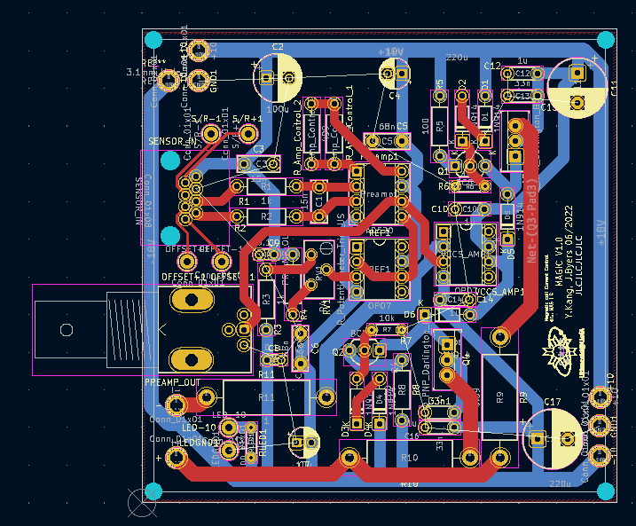
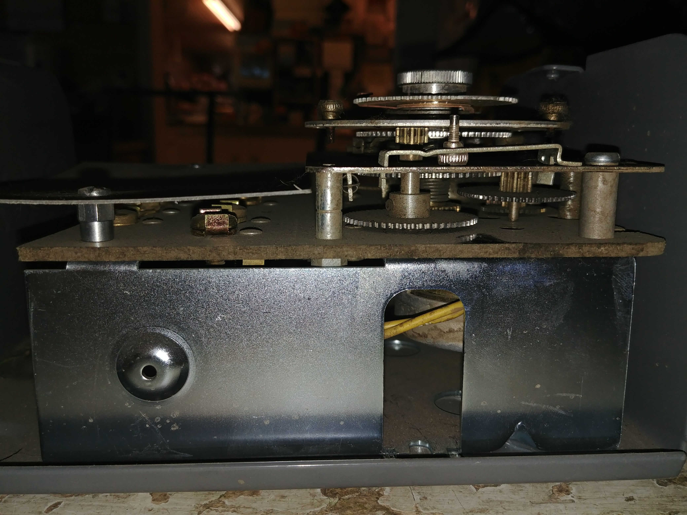

Projects
This website was built from the ground up using HTML and CSS, here are some more of my projects.
1986 Saab 900

I bought this car for $800 in Jasper, AB and it barely ran, was leaking oil like the Exxon Valdez, and had been off the road for close to 5 years. I took the engine out to replace a front main seal, rebuilt the front calipers, replaced the radiator, and have since done more work than I can remember. The car is now road legal and has been a running project.
Coil driver PCB
This PCB is designed to turn a voltage signal from an Honeywell HMC 1021z sensor into a current that drives a set of Helmholtz coils. To do this it uses an AD620 instrumentation amplifier which drives a voltage controlled current source.
Rock On
Best Hardware Hack winner HackEd 2022. HAve you ever been ashamed at your ability to play the guitar? Well this is the guitar pedal for you! In next to no time you can rock with the best of them using the Rock On pedal. As soon as it detects a sound input from your miserable little fingers it sends a 2 second loop of the Rock rapping to the amp. Now anybody can truly be a rockstar!
Here is a link to our original devpost submission: Click Me!
Juan Wick

Hackathon winner Yeehaw Hacks. 3 of my friends and I decided to enter into the Yeehaw Hacks 48 hour hackathon hosted by Major League Hacking. During the hackathon we built a functioning game with 4 levels from the ground up, with every aspect of the game made from scratch. This game was made using Unity which required us to get familiar with C#, which we did not have experience with. We were able to adapt quickly and efficiently organized the developement of a game under time constraints and ended up winning the Hackathon, amongst a flurry of submisions from around the world.
Here is a link to our original devpost submission: Click Me!
Tube Amplifier
I needed a guitar amp for a Squier Stratocaster that I was able to piece together from a few years back. I decided that instead of getting a cheaper amp, that I would set out to build my own tube amp that would emulate the classic sound of single ended amplifiers of the 50's and 60's. This design incoroporates many elements from the classic Fender Champ amps of the era as well as the Multivox Premier 50. The desing uses a 12AX7 tube for a pre-amp and uses a 7591A power tube. The power tube choice is rather weird but I'm going to stick with it as I was able to find them locally on Kijiji, along with the 12AX7's. Been slowly piecing it together over the semester.
Electric Tricyle
This project was completed in my Grade 11 year of high school and it remains my first and only foray into developing an electric vehicle. It utilised an electric motor off of an old Schwinn electric bicycle that was laying in a field. I cut up an old bike frame from when I was younger and welded together a custom frame for the back to wheels and seat. The whole bicycle It was powered by 3 motorcycle battereis mounted in series to provide it with 36V as opposed to the 24v that it was initially provided with. This was to provide it with more power and torque due to it now being a primary source of propulsion instead of a pedalling aid. Overall this was a fun project that I'm happy to have created.
Rebuilding Compressor Time Clocks
When my family still owned the store in Alix I took it upon myself to rebuild a compressor clock that controlled the defrost period of a cooler. These were necessary due to alot of the compressors at the store being dated to the 80's or even the 60's! These were mechanical timers that were driven by an electronic motor and had pins that would flip a switch to engage and disengage a defrost period. As these were old clocks the geartrain for the clocks wore down and they were unable to keep time or were broken. Usually this would mean having to buy new ones, but I was able to use gears from different model time clocks to ensure that they will continue to work for a good while again. It was a great foray into the world of electromechanics and one of the first control systems that I worked on.